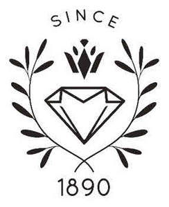

Trade Mark Journal No.2025/018 2 May 2025
UK00004190901 17 April 2025 (14,35)

- Class 14
- Agates; clock hands; ingots of precious metals; jewellery of yellow amber; jewelry of yellow amber; pearls made of ambroid [pressed amber]; amulets [jewellery]; amulets [jewelry]; spun silver [silver wire]; silver thread [jewellery]; silver thread [jewelry]; clocks; pendulums [clock- and watchmaking]; barrels [clock- and watchmaking]; bracelets [jewellery]; bracelets [jewelry]; wristwatches; watch bands; straps for wristwatches; watch straps; jewellery charms; jewelry charms; charms for jewellery; charms for jewelry; brooches [jewellery]; brooches [jewelry]; dials [clock- and watchmaking]; sundials; clockworks; chains [jewellery]; chains [jewelry]; watch chains; chronographs [watches]; chronometers; chronoscopes; chronometric instruments; necklaces [jewellery]; necklaces [jewelry]; clocks and watches, electric; tie clips; coins; diamonds; threads of precious metal [jewellery]; wire of precious metal [jewellery]; threads of precious metal [jewelry]; wire of precious metal [jewelry]; atomic clocks; control clocks [master clocks]; master clocks; clock cases; iridium; ivory jewellery; ivory jewelry; ornaments of jet; jet, unwrought or semi-wrought; copper tokens; jewellery; jewelry; lockets [jewellery]; lockets [jewelry]; medals; precious metals, unwrought or semi-wrought; watches; watch springs; watch glasses; watch crystals; movements for clocks and watches; olivine [gems]; peridot; gold, unwrought or beaten; gold thread [jewellery]; gold thread [jewelry]; osmium; palladium; ornamental pins; pearls [jewellery]; pearls [jewelry]; semi-precious stones; precious stones; platinum [metal]; alarm clocks; rhodium; ruthenium; spinel [precious stones]; statues of precious metal; paste jewellery; paste jewelry [costume jewelry]; alloys of precious metal; anchors [clock- and watchmaking]; rings [jewellery]; rings [jewelry]; works of art of precious metal; boxes of precious metal; hat jewellery; hat jewelry; earrings; shoe jewellery; shoe jewelry; cuff links; busts of precious metal; watch cases [parts of watches]; presentation boxes for watches; figurines [statuettes] of precious metal; statuettes of precious metal; pins [jewellery]; pins [jewelry]; tie pins; badges of precious metal; key rings [split rings with trinket or decorative fob]; key chains [split rings with trinket or decorative fob]; silver, unwrought or beaten; stopwatches; cloisonné jewellery; cloisonné jewelry; jewellery boxes; jewelry boxes; beads for making jewellery; beads for making jewelry; clasps for jewellery; clasps for jewelry; jewellery findings; jewelry findings; jewellery rolls; jewelry rolls; cabochons; split rings of precious metal for keys; presentation boxes for jewellery; presentation boxes for jewelry; watch hands; misbaha [prayer beads]; bracelets made of embroidered textile [jewellery]; bracelets made of embroidered textile [jewelry]; charms for key rings; charms for key chains; rosaries; chaplets.
- Class 35
- Business management assistance; business inquiries; bill-posting; outdoor advertising; import-export agency services; commercial information agency services; cost price analysis; dissemination of advertising matter; photocopying services; employment agency services; office machines and equipment rental*; book-keeping; accounting; drawing up of statements of accounts; business auditing; business management and organization consultancy; personnel management consultancy; business management consultancy; typing; demonstration of goods; direct mail advertising; commercial or industrial management assistance; document reproduction; updating of advertising material; distribution of samples; business efficiency expert services; auctioneering; market studies; business appraisals; business investigations; publicity material rental; business organization consultancy; publication of publicity texts; advertising; publicity; radio advertising; business research; public relations; shorthand; television advertising; transcription of communications [office functions]; shop window dressing; advertising agency services; publicity agency services; advisory services for business management; modelling for advertising or sales promotion; marketing research; computerized file management; professional business consultancy; economic forecasting; organization of exhibitions for commercial or advertising purposes; business information; opinion polling; payroll preparation; personnel recruitment; relocation services for businesses; rental of advertising space; sales promotion for others; secretarial services; tax preparation; telephone answering for unavailable subscribers; word processing; arranging newspaper subscriptions for others; advertising by mail order; business management of hotels; business management of performing artists; compilation of information into computer databases; systemization of information into computer databases; organization of trade fairs for commercial or advertising purposes; rental of photocopying machines; on-line advertising on a computer network; procurement services for others [purchasing goods and services for other businesses]; data search in computer files for others; rental of advertising time on communication media; news clipping services; rental of vending machines; psychological testing for the selection of personnel; price comparison services; presentation of goods on communication media, for retail purposes; commercial information and advice for consumers [consumer advice shop]; arranging subscriptions to telecommunication services for others; administrative processing of purchase orders; commercial administration of the licensing of the goods and services of others; outsourcing services [business assistance]; invoicing; writing of publicity texts; compilation of statistics; layout services for advertising purposes; sponsorship search; organization of fashion shows for promotional purposes; production of advertising films; business management of sports people; marketing; telemarketing services; retail or wholesale services for pharmaceutical, veterinary and sanitary preparations and medical supplies; rental of sales stands; provision of commercial and business contact information; search engine optimization for sales promotion; search engine optimisation for sales promotion; web site traffic optimization; web site traffic optimisation; pay per click advertising; commercial intermediation services; business management for freelance service providers; negotiation and conclusion of commercial transactions for third parties; updating and maintenance of data in computer databases; business project management services for construction projects; providing business information via a web site; provision of an on-line marketplace for buyers and sellers of goods and services; design of advertising materials; outsourced administrative management for companies; tax filing services; business management of reimbursement programmes for others; business management of reimbursement programs for others; rental of billboards [advertising boards]; writing of curriculum vitae for others; writing of résumés for others; web indexing for commercial or advertising purposes; administration of frequent flyer programs; appointment scheduling services [office functions]; appointment reminder services [office functions]; administration of consumer loyalty programs; scriptwriting for advertising purposes; registration of written communications and data; updating and maintenance of information in registries; compiling indexes of information for commercial or advertising purposes; business intermediary services relating to the matching of potential private investors with entrepreneurs needing funding; production of teleshopping programmes; production of teleshopping programs; consultancy regarding public relations communications strategy; consultancy regarding advertising communications strategy; negotiation of business contracts for others.
Promomark SA
Representative: Beck Greener LLP